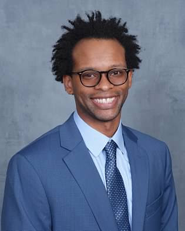
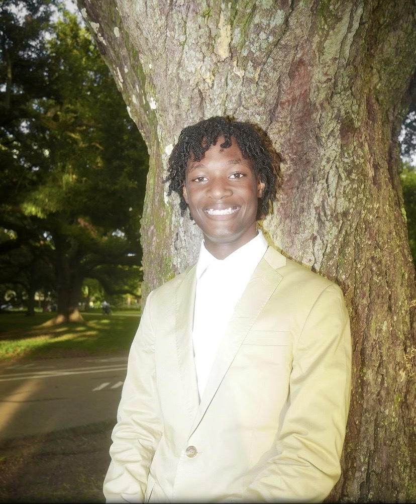
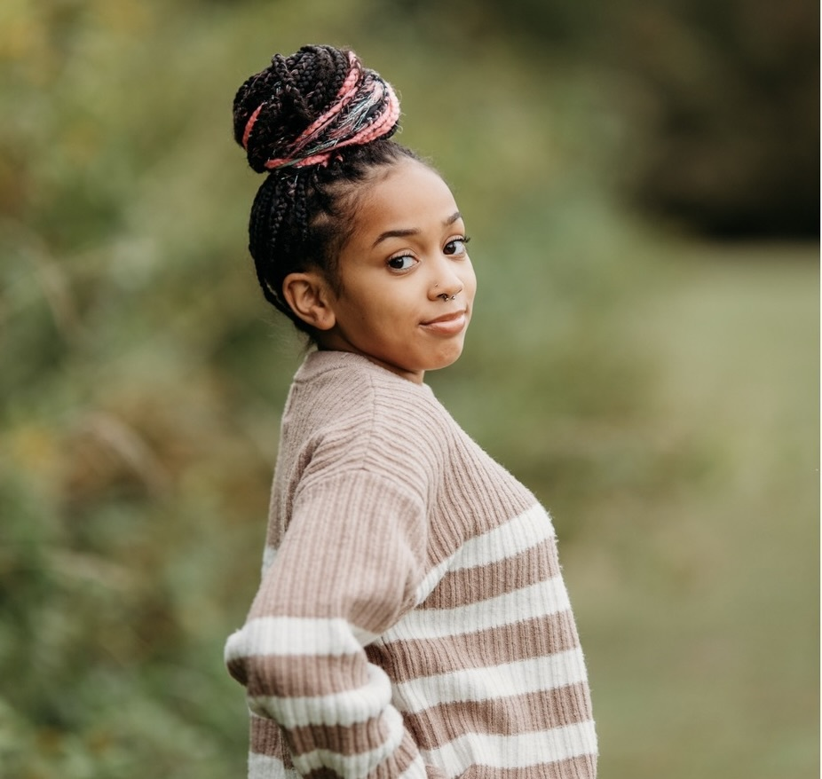
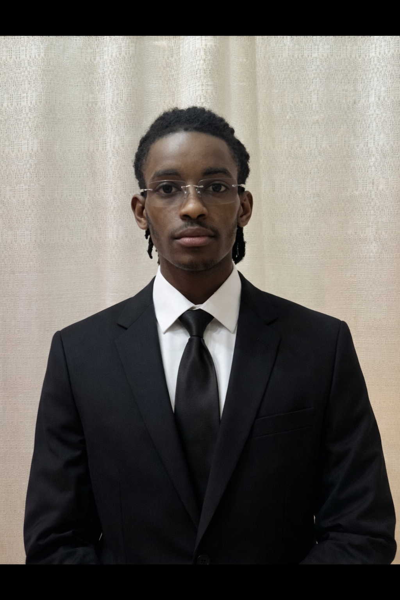

Meet Team Capsule Corp Coder Z

Javonte Carter
A Master of Science graduate student in Computer Science. Focuses on integrating complex systems architecture, including branching narrative pathways and text-based combat mechanics.

Joshua Chaney
I am a rising sophomore at Mississippi Valley State University majoring in Computer Science with interests in cybersecurity, artificial intelligence, and game design. Growing up in Louisiana sparked my passion for technology and problem-solving, while my experiences in athletics, debate, theater, and STEM outreach strengthened my leadership, communication, and teamwork skills. I aspire to develop innovative technologies that improve lives while inspiring others to pursue careers in STEM.

Sydney Riddick
I am from North Carolina and am currently pursuing a Master's degree in Biology at Elizabeth City State University after earning my bachelor's degree in General Biology with minors in Chemistry and Sustainability. My research focuses on the ability of bacteria from the Roseobacter clade to degrade harmful environmental pollutants. Through tutoring, teaching biology labs, and participating in research and biopharmaceutical training, I have developed a passion for scientific discovery, education, and using science to improve lives.

Chance Walker
Hello! My name is Chance Walker, and I am a rising junior at Winston-Salem State University majoring in Computer Science. I am passionate about software engineering, cybersecurity, and building innovative solutions through technology. My experience includes collaborative software development, earning 3rd place in a nationwide hackathon, and combining AI with audio engineering to create music software and plugins. I look forward to expanding my technical expertise and contributing to impactful engineering projects and internships.